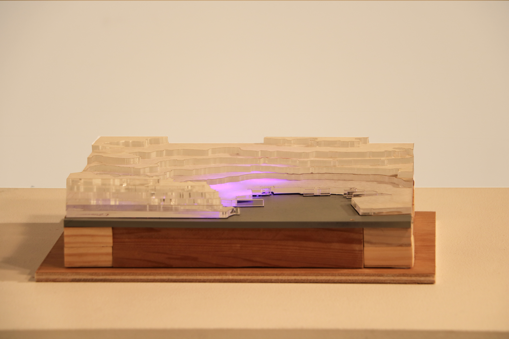
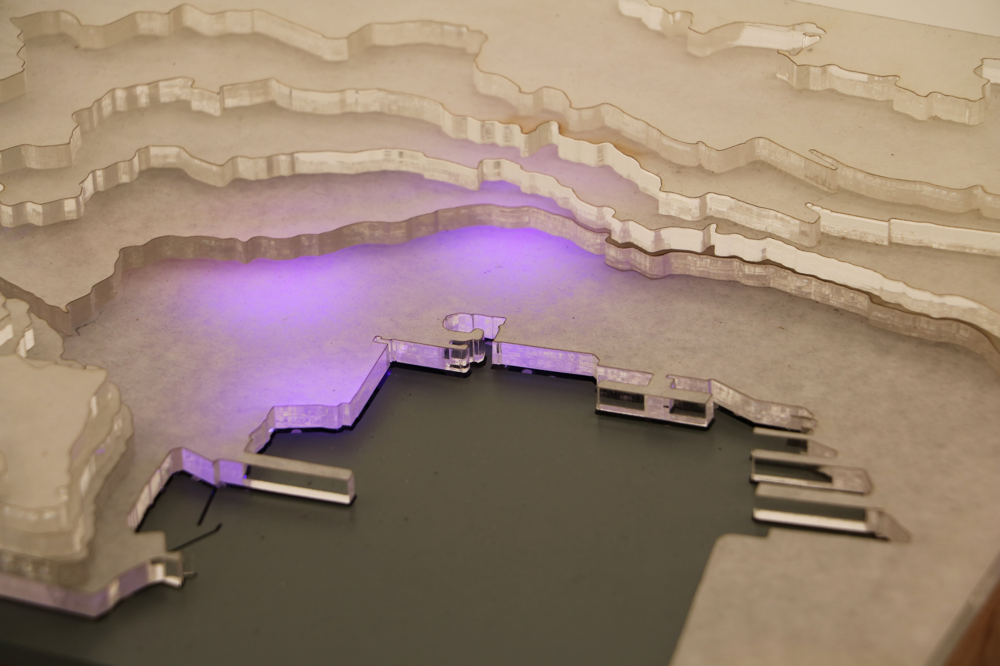
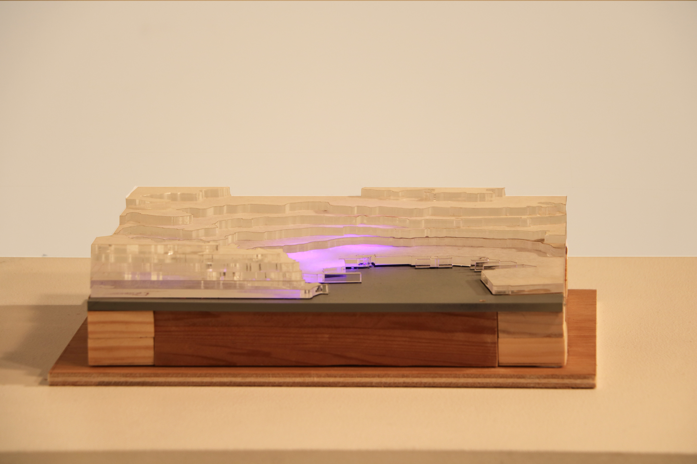
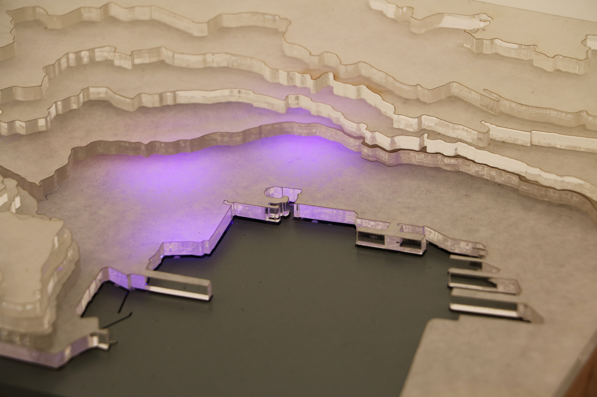
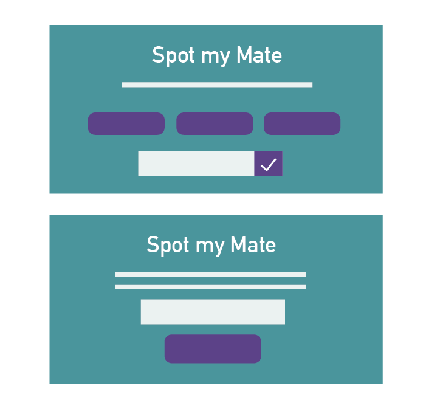
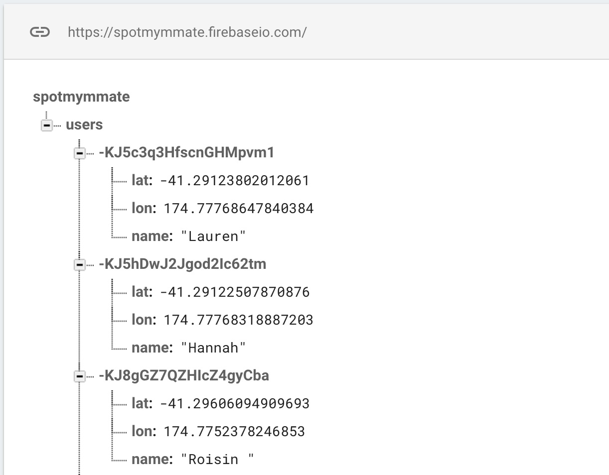

Spot My Mate
Created For: Physical Computing | Victoria University of Wellington
As a society we are beginning to place socializing after work commitments, creating less time to meet up with friends.
However maybe if we could physically see our social interactions we would try to have more throughout the day.
Spot my Mate is a project that aims to solve this decrease in communication, by encouraging people to use technology to socialise and interact with their friends throughout the day.
Broadening on the idea of GPS navigation, this project produces an interactive form of mapping and locating,
that strengthens social activity and encourages students to use technology to meet up with friends during their spare time.
This project produced an interactive sculpture and a mobile website as well as incorporating circuit design
 



Interaction Flowchart
Website component
The website involved in Spot my Mate was created as a basic way to track the users location. Ideally this would be in the from of an app but for the limited amount of time and resources we had for this project I had to make it a website that could be accessed on a phone. The website was created on Github pages and its sole feature is to prompt the user to enter in their name. The website then uses a GeoLocation API that tracks each users location when they press the "Socialise Me" button, this location is then paired up with the name entered. These real time locations of the user are sent to a database hosted on the Firebase platform. These names and locations are then pulled down to a processing sketch, which lights up the LED’s on the sculpture from the lat and lon coordinates.
These were my intial wireframes for the web and mobile version. I wanted a really simple interface so that all the user would know exactly what to do. I chose the design that had the text field and button at the top of the screen so that repeat users could easily and quickly enter in their information, whereas one time users could scroll down and read more about the application.
First development
Mobile and Web version
Linking to Firebase
The interaction of clicking the 'Socialise Me' button sends your latitude and longitude values to the Firebase database along with the name entered. On the left is the Firebase database with the stored names and their correspondng values. This can be accessed as a JSON object so that the processing sketch can pull the data down from the web.
 View Processing Sketch